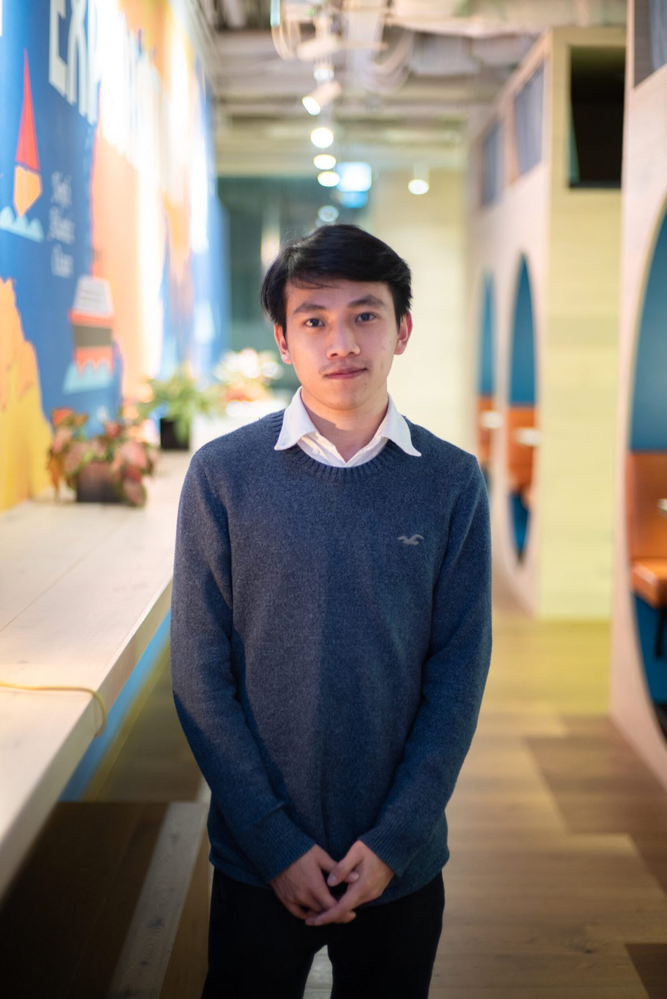

Hello there,
I’m Ryan.
I am an all-rounder with experience in IT, business management, finance and law. I enjoy solving problems, building useful tools, improving processes and getting things done.

Photo taken in 2020
About me
I am often described as a get-things-done person. I can manage projects and handle tasks effectively because I use critical thinking, problem-solving and practical judgement. I am comfortable working independently, using available resources, making informed decisions and escalating issues when appropriate.
Timeline
Completed Master of Law degree at UOL
I completed a Master of Laws (LLM) despite not intending to pursue a legal career, as I believe legal knowledge is valuable in any industry or role. I have always enjoyed logical thinking, and studying law helped me develop this further through analysing cases and interpreting complex arguments.
Editec – SQL Integration Specialist
As a SQL Integration Specialist, I focus on maintaining and improving database-driven systems in a production environment. My role involves writing and optimising complex T-SQL queries, stored procedures, and triggers, as well as troubleshooting performance issues and system errors. I support a highly customised enterprise application, from design front-end interface to correcting backend data. Alongside this, I build supporting tools and dashboards using Python and SQL to enhance monitoring and reporting.
Leadscale – Application Support / Operations
Supported data orchestration and campaign operations using internal applications. I enjoyed creating tools such as formulated spreadsheets, VBA macros, shortcuts and workflow improvements to make processes more efficient.
Internships and early experience
Gained experience across finance, insurance, business development, IT project management and data collection roles in Hong Kong, China and the UK.
UCL – Information Management for Business
Studied IT and business management modules including Java, Python, databases, information systems, project management, accounting, marketing, business finance and business law.
Moved from Hong Kong to the UK
Moved to the UK to study independently, completing GCSEs and A-Levels.
Skills
Technical: SQL Server, T-SQL, Python, database management, systems integration
Analytical: Troubleshooting, performance optimisation, root cause analysis
Tools & Reporting: Reporting, data analysis, automation
Working Style: Application support, documentation, process improvement
Quote
“If you want to succeed as bad as you want to breathe then you will be successful.”